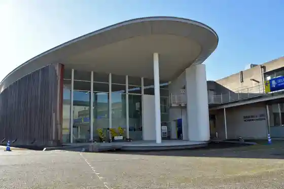
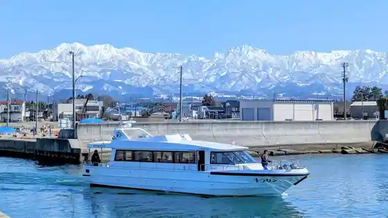
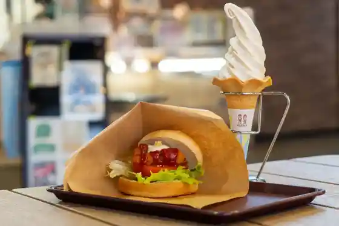
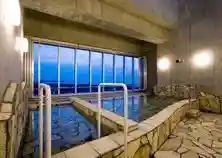

Hotaruika Kaijo Kanko
Namerikawa, Toyama · 076-476-9307 · Official / source link
Hotaruika Museum
Namerikawa, Toyama · 076-476-9300 · Official / source link

Toyamawan Kishi Kurujingu
Namerikawa, Toyama · 076-476-9307 · Official / source link

Roadside Station Uebu Park Namerikawa
Namerikawa, Toyama · 076-476-9300 · Official / source link

Namerikawa Tami Koryu Plaza (Airabu Yu)
Namerikawa, Toyama · 076-476-5500 · Official / source link

Namerikawa Seaside Park Campground
Namerikawa, Toyama · 076-471-6981 · Official / source link
Hisashi Shi Sakanaryori Kosugi Nagomi
Namerikawa, Toyama · 076-475-8048 · Official / source link
Kajiyabashi
Namerikawa, Toyama · 076-476-5511 · Official / source link
Namerikawa Ritsu Museum
Namerikawa, Toyama · 076-474-9200 · Official / source link
Namerikawa Shukuba Kairo to Kyu Miyazaki Shuzo
Namerikawa, Toyama · 076-476-9200 · Official / source link
Pa no Ramaresutoran Kosai
Namerikawa, Toyama · 076-476-1370 · Official / source link
Tofukuji no Nature Park
Namerikawa, Toyama · 076-474-1141 · Official / source link
BISTRO CesT la Vie Sosaku Bisutoro Seravi
Namerikawa, Toyama · Official / source link
Namerikawa Granvilla Grappa
Namerikawa, Toyama · 076-474-0081 · Official / source link
Ebi Gen Resutoran Kaiyu Tei
Namerikawa, Toyama · 076-475-5656 · Official / source link
Akuapogatto
Namerikawa, Toyama · 076-476-9305 · Official / source link
Gyoda Koen to Hana Shobu
Namerikawa, Toyama · 076-476-9200 · Official / source link
Hotaruika no Hakko Sho
Namerikawa, Toyama · 076-476-9300 · Official / source link
Fuji Fuirumumanyufakuchiaringu Toyama Jigyosho
Namerikawa, Toyama · 076-477-9111 · Official / source link
Mi no Wa Onsen Tenisu Village
Namerikawa, Toyama · 076-474-1770 · Official / source link
KAKIAMI (Kakiami)
Namerikawa, Toyama · Official / source link
Tarasopia
Namerikawa, Toyama · 076-476-9303 · Official / source link
Kurasu Sauna Tsurugi
Namerikawa, Toyama · Official / source link
Hon'e Iseki
Namerikawa, Toyama · 076-474-9200 · Official / source link
Kappo Araki
Namerikawa, Toyama · 076-476-0101 · Official / source link
Shokuji Tokoro Tenkatsu
Namerikawa, Toyama · 076-475-2525 · Official / source link
Namerikawa Yakusho
Namerikawa, Toyama · 076-475-2111 · Official / source link